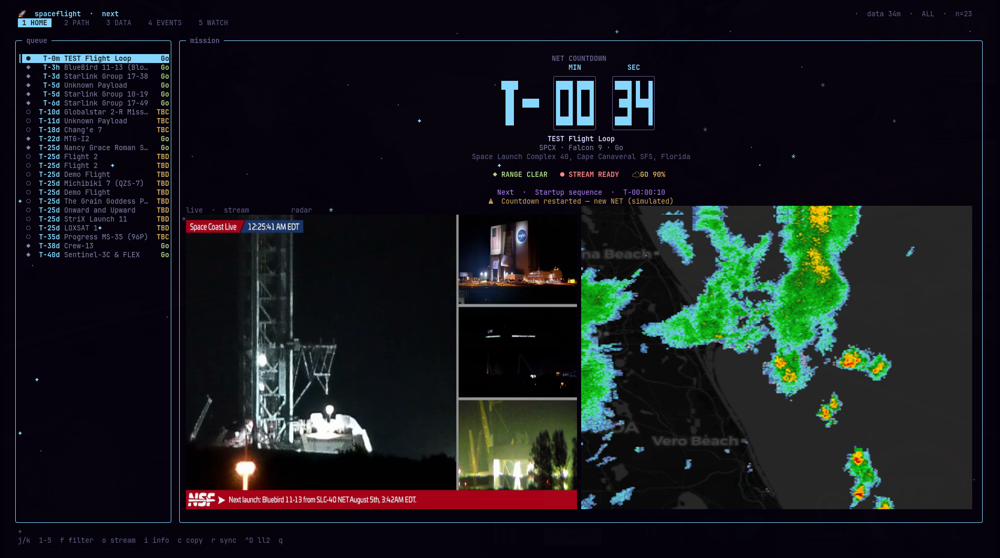
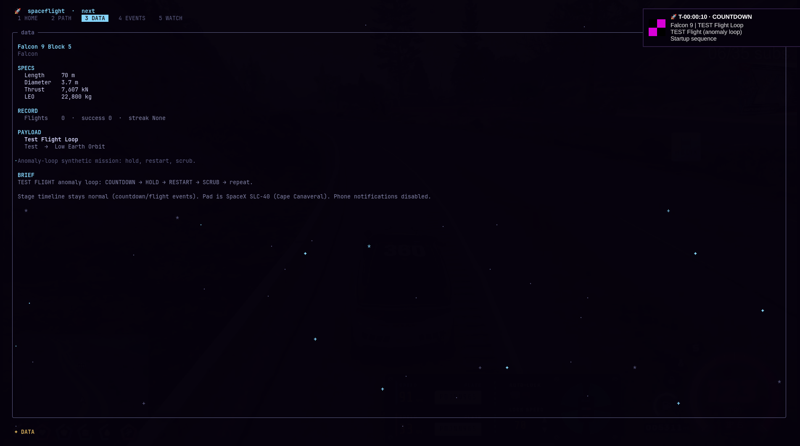
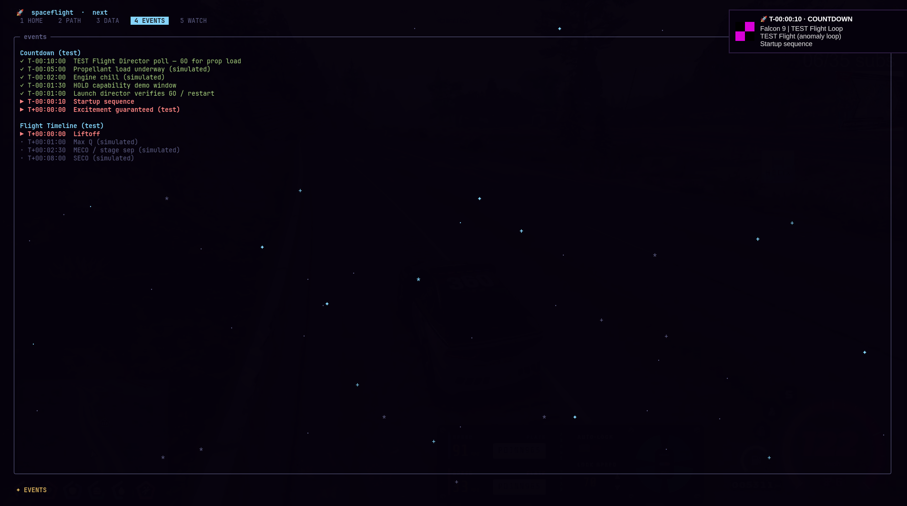
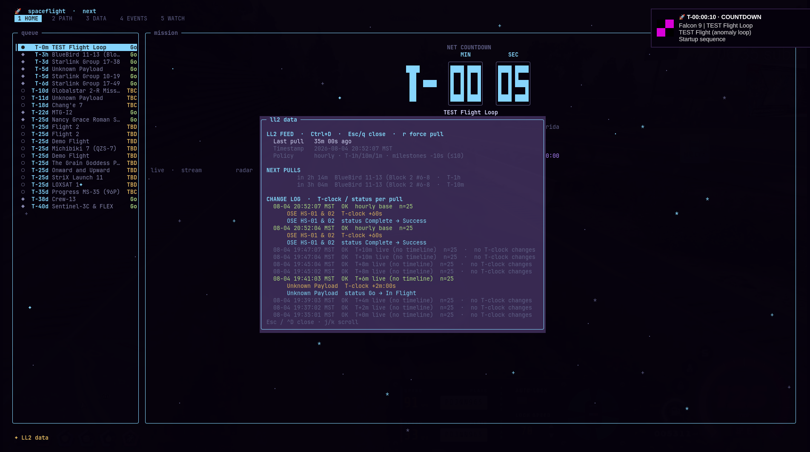

Simple control flow
No recursion in core paths. Prefer early returns over deep nesting.
Spaceflight turns your terminal into a launch desk — unit-card countdowns, live stream + weather radar, stage timelines, an Omarchy Quattro bar plugin (click for a mission card — no hover tooltip), Waybar, and optional phone pushes so you never miss a window.

Captured live from Spaceflight on Linux (Ghostty + Kitty graphics). Same Tokyo Night language as the TUI you install — no marketing mockups.



P10 is short for The Power of Ten — Gerard J. Holzmann’s ten rules for writing safety-critical software, developed at NASA/JPL’s Laboratory for Reliable Software. They were written for flight software; Spaceflight applies the same discipline to a launch-tracking TUI.
In plain terms: small functions, bounded loops, checked returns, no recursive spaghetti, and a mechanical checker that must stay green. When the site or bar says P10, it means the code is held to those rules — not that a rocket is at “power level 10.”
No recursion in core paths. Prefer early returns over deep nesting.
Every loop has a fixed upper bound — except daemon / TUI main loops tagged on purpose.
Collections use MAX_* limits. Functions stay ≤ 60 lines.
Assertions in hot paths, tight scopes, and no silently dropped errors.
No eval/exec of untrusted data; explicit control flow over call-table soup.
ruff, mypy, and tools/check_p10.py must pass clean.
tools/check_p10.py on every package tree.
Holzmann’s original paper (PDF) →
Full Python mapping →
Built for the hour before T-0: dense when it matters, calm when it doesn’t. Tokyo Night palette. Power-of-Ten disciplined Python.
Wall-clock T− / T+ in the TUI and on your status bar. Hold freezes the clock. Scrub and complete states stay honest — no phantom “still going” flights.
Big NET board, dual live stream + weather radar panes, stage rail, and a status bus for HOLD / SCRUB / weather / GO% — all without leaving the terminal.
Desktop alerts for prop load, Max-Q, MECO, landings — when a timeline exists. Phone gets the clean moments: T-24h, T-1h, T-10m, scrub/failure.
First-install wizard generates a private topic, walks you through the free
ntfy app, and sends a test. Secrets stay in
~/.config/spaceflight/ — never in the repo.
One-second ticks from local cache — zero API hammering. Drop-in Waybar module, first-class on Omarchy Quattro (Omarchy shell), or wire the same helper into any custom bar that can run a script.
Launch Library 2 schedule, RocketLaunch.Live weather, SpaceX CMS timelines. Smart pull budget respects free-tier rate limits.
Same mission language everywhere — so when the range holds, you feel it in every surface.
Waybar · Omarchy Quattro
Same countdown JSON for Waybar, Omarchy’s Quattro bar, or any DIY status bar. Finished / DONE missions never steal the slot.
Desktop · ntfy phone
Vehicle: Starship Provider: SpaceX Location: Starbase, TX NET: local + UTC Watch: open stream
Linux-first. On Omarchy Quattro, add the plugin then run the installer for the CLI, daemon, and ntfy wizard. Click the bar pill for launch details.
# Omarchy Quattro plugin omarchy plugin add https://github.com/0xRainy/spaceflight-tui --enable bash ~/.config/omarchy/plugins/0xrainy.spaceflight/scripts/install.sh # or clone & install git clone https://github.com/0xRainy/spaceflight-tui.git cd spaceflight-tui bash scripts/install.sh # launch mission control spaceflight # optional anytime spaceflight setup # ntfy phone wizard spaceflight notify-test # desktop smoke test
Symlinks the CLI, enables spaceflight.service, seeds launch cache.
Interactive ntfy onboarding generates a private topic and sends a test push.
Click the Quattro bar pill for NET, window, and queue. Right-click opens the TUI. Waybar still works if you prefer hover tooltips.
Free, open source, no telemetry, no keys. Just launches — rendered the way a terminal deserves.